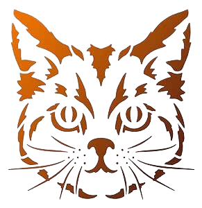

FESTIVAL DE VIDEOJUEGOS, LA GAMEPOLIS
CONTACTO:

CONTACTO:
Os dejamos la ubicación de donde se suele celebrar en Málaga.
Es el festival de videojuegos más grande de Andalucía. Con más de 66.000 visitantes en la edición de 2023, afronta su décima edición del 21 al 23 de julio en Málaga con el objetivo de acoger en el Palacio de Ferias de Málaga a 70.000 amantes de los videojuegos.
La programación de este evento destaca por su amplia variedad de actividades como las diferentes secciones del lugar donde es posible probar videojuegos gratuitamente y consta de seis componentes principales: la zona competitiva de ciertos juegos, la zona de conferencias, el espacio de exposición y venta, escenario de conciertos, Zona Indie y espacio retro.
Si desea conocer más acerca de este gran evento, proporcionamos el enlace a su web oficial:
GAMEPOLIS¡No te pierdas las últimas noticias sobre este gran festival! seguidlo más de cerca a través de la cuenta oficial:
Twitter del festival gamingSoy Alberto, amante de los videojuegos y del cine. Aún recuerdo cuando probé por primera vez mi primer juego, es una experiencia muy reconfortante e inolvidable. ¿Quien no quiso disfrutar de momentos inolvidables y echarse unas partidas con la familia o con un grupo de amigos sentados o tumbados en el sofá? si os gusta este mundo, os recomiendo que vayáis a este gran evento de Gamepolis, vais a gozarlo, ¡os lo aseguro!